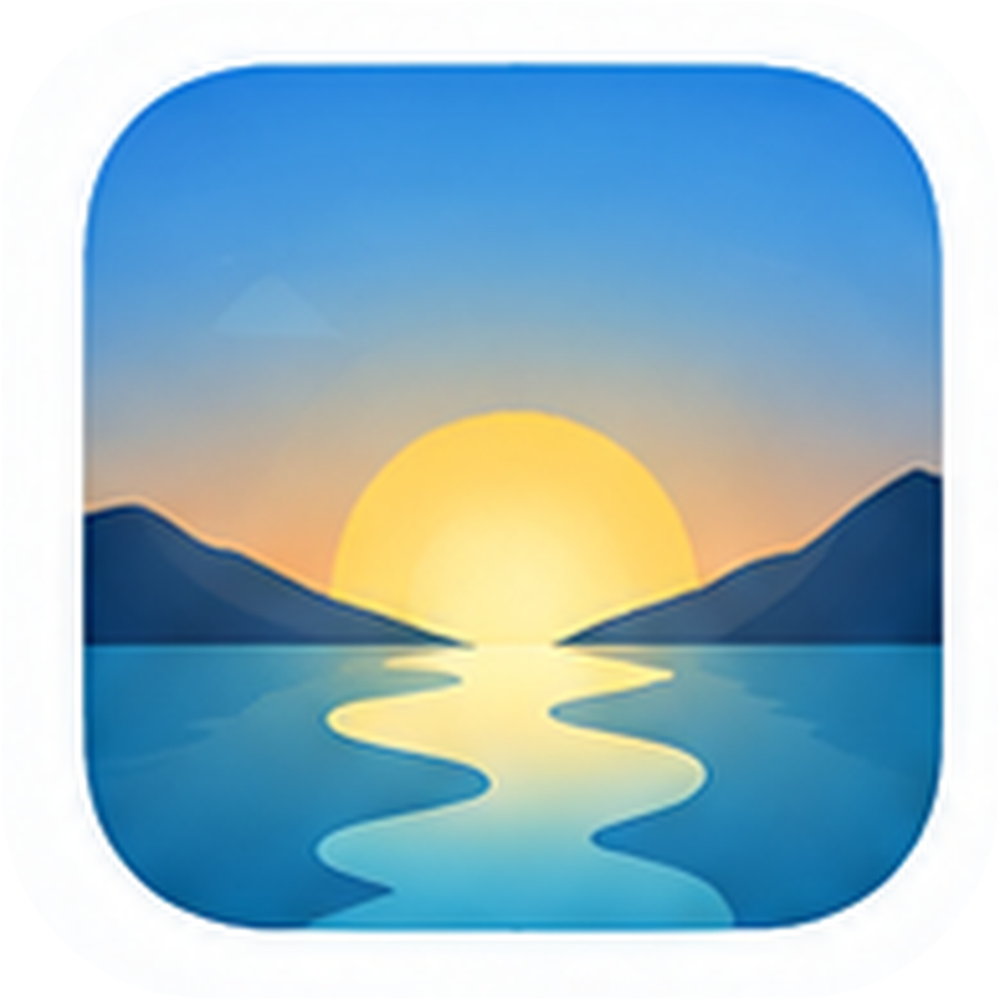

每日记录
记录睡眠、身体、任务、主动、娱乐和真实的生活体验

~风平浪静的一天~
记录睡眠、身体、任务、主动、娱乐和真实的生活体验
7天趋势、历史记录、图表分析，帮助你发现规律
数据保存在本地，保护隐私，无需账号，打开即用
没有网络也能正常使用
单页面应用，操作简单，专注于你的生活本身
支持在线检查更新，获取最新功能和优化
用最简单的方式，记录真实的生活，让每一天都有可见的进步和更好的体验。
Life System
记录当下 · 看见规律 · 掌控生活
用简单的方式，记录真实的生活，
让每一天都有迹可循。
见微不是日程管理器，也不是打卡软件。它希望帮助你每天花很少的时间，记录自己的真实状态。
见微将你的生活分为 5 个维度，帮助你全面了解自己。
睡得好，才有好状态
运动，让身体更有活力
把重要的事一件件完成
主动选择，认真生活
适度放松，享受当下
我们希望你拥有的生活状态：
先把生活稳住。睡眠、身体、基本生活状态，是一切选择的基础。
生活不只是完成任务。人还需要体验、休息、娱乐与投入。
通过持续记录产生变化，完成重要事情，学习新的东西。
越是想为了拥有更多选择，了解自己，知道什么适合自己。
我们无法控制生活中发生的一切，
但可以逐渐了解自己的状态，
看见生活中的规律，
并在理解的基础上做出自己的选择。
确定继续吗？